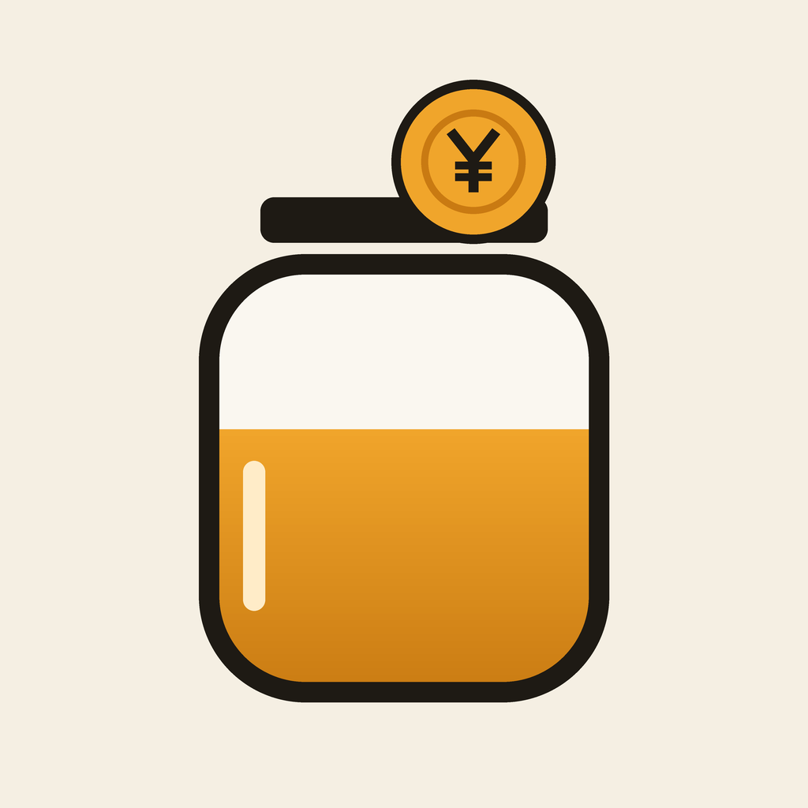

やせ貯金がまんした分だけ、お金とカロリーが貯まる
サポート
ご質問・不具合のご報告は、こちらのメールアドレスへお送りください。
不具合の場合は、iPhoneの機種とiOSのバージョン、起きたときの操作を添えていただけると助かります。
よくある質問
本当にお金が貯まりますか?
本アプリはお金を預かりません。がまんした分の金額を記録して見える化するアプリです。貯まった額を実際に貯金口座へ移すと、より効果的です。
まちがえてボタンを押しました
押した直後に画面の下に出る「取り消す」で元に戻せます。
がまんする品目や値段を変えたい
ホーム画面の「編集」から、追加・値段とカロリーの変更・並べ替え・削除ができます。品目の長押しからも編集できます。値段を変えても、それまでの記録の金額は変わりません。
体重ボーナスとは?
これまでの最低体重を1kg更新するごとに、ボーナスが貯金に加わります。体重が戻っても、もらったボーナスは減りません。
機種変更でデータを引き継げますか?
データはiPhoneの中だけに保存されています。iCloudバックアップやパソコンへのバックアップから新しいiPhoneへ復元すると、本アプリのデータも引き継がれます。